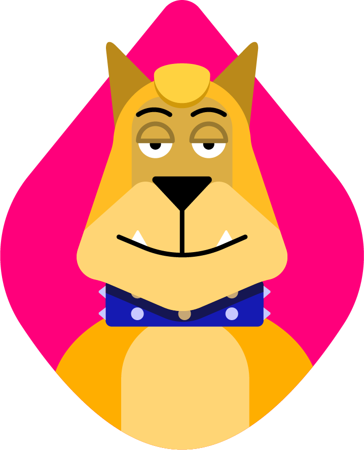

<!DOCTYPE html>
<html>
<head>
	<title>Felix</title>
	<link rel="icon" href="img/Felix-Avatar.jpg">
	<link href="https://fonts.googleapis.com/css2?family=Bungee&display=swap" rel="stylesheet">
	<link rel="stylesheet" type="text/css" href="css/hero.css">
</head>
<body>
	<!-- header element -->
	<header>
		
		<h1>Felix</h1>
	</header>

	<!-- main element -->

	<main>
		<h2>About Felix</h2>
		<p>Suave and sophisticated, Felix is the smartest of the brothers. He tends to challenge his brain through playing the violin in his spare time, and is very artistic.</p>
		
		<p class="caption">Felix and his brothers</p>

		<!-- Characteristics -->
		<h2>Felix's Characteristics</h2>
		<ol>
			<li>He's suave and sophisticated</li>
			<li>He's smart and very sharp</li>
			<li>He's TOP DOG!</li>
		</ol>
		<!-- Brothers -->
		<h2>Felix's Brothers</h2>
		<p>Felix has two brothers. One is called Fido. He is clumsy and dim-witted but loyal to a fault. He is more advanced than present-day dogs. The other brother is called Max. Max is the bruiser of the group. He likes to wrestle and is a K9 MMA champ! He is also very street-smart. Click on the links below to read about them:</p>
		<ul>
			<li><a target="_blank" href="https://en.wikipedia.org/wiki/Fido">Fido</li>
			<li><a target="_blank" href="https://en.wikipedia.org/wiki/Max_Schneider">Max</li>
		</ul>
	</main>

	<!-- Footer element -->
	<footer>
		<p>This site was created during a <a target="_blank" href="https://taptapkaboom.com">Tap Tap Kaboom</a> class. &copy; Daniel</p> 
	</footer>

</body>
</html>